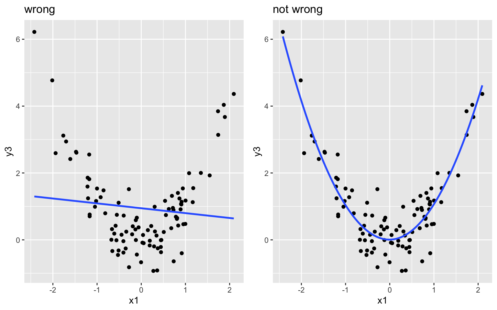
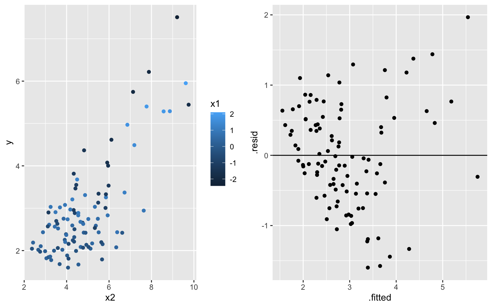
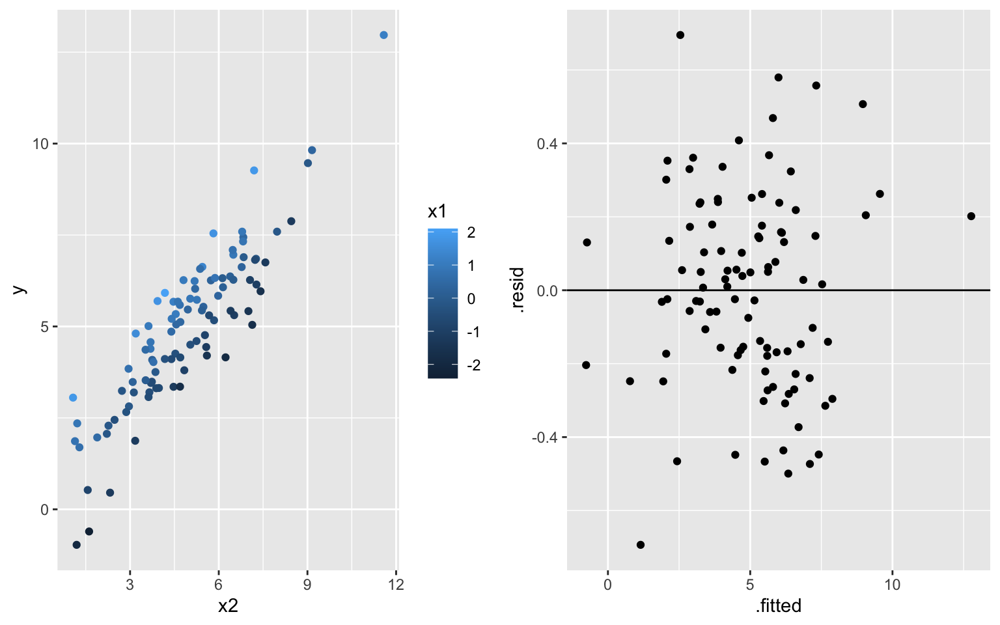
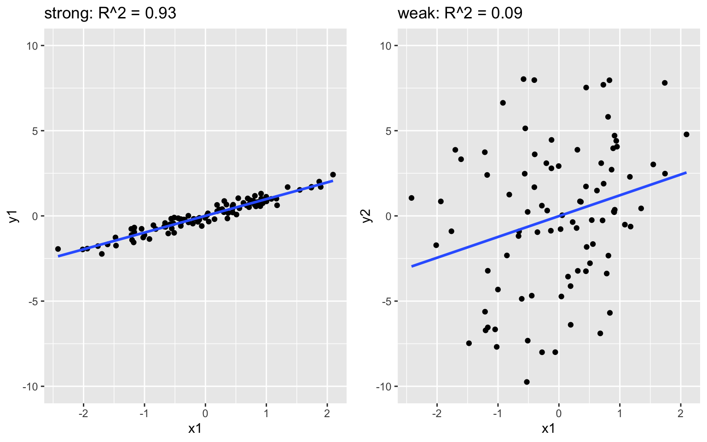
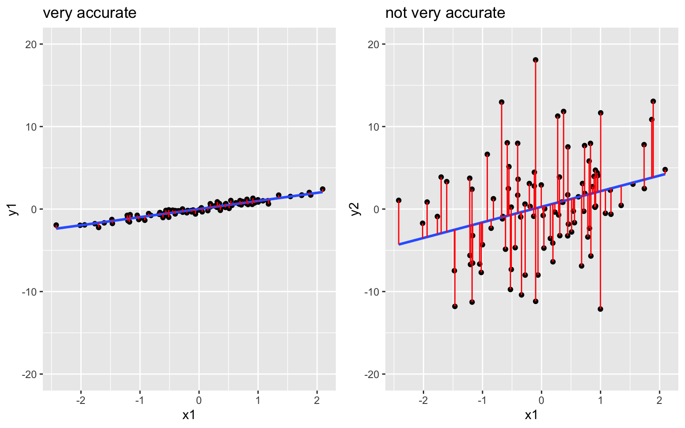

Motivating Question

We are in the regression setting. We want to build a model of some quantitative output variable \(y\) by some predictors \(x\):
\[y = f(x) + \epsilon\]
After building this model, it’s important to evaluate it: Is our regression model a “good” model?
Is the model wrong?
Is the model strong?
Does the model produce accurate predictions?
Is the model fair?
- Is the model wrong? What assumptions does our model make and are these reasonable?
To check:
Examine a residual plot, ie. a scatterplot of the residuals vs predictions for each case. Points should appear randomly scattered with no clear pattern. If you see any patterns in the residuals that suggest you are systematically over or underpredicting for different prediction values, this indicates that the assumption about the relationship with predictors could be wrong.
Example: Model \(y = \beta_0 + \beta_1 x_1 + \beta_2 x_2 + \epsilon\). What about the plots below reveals that this model is “wrong”?

What about the plots below reveals that this model is “not wrong”?

- Is the model strong? How well does our model explain the variability in the response?

Check: \(R^2\), the proportion of variability in \(y\) that’s explained by the model. The closer to 1 the better.
\[R^2 = 1 - \frac{\text{Var}(\text{residuals})}{\text{Var}(y)} = 1 - \frac{\sum_{i=1}^n(y_i - \hat{y}_i)^2}{\sum_{i=1}^n(y_i - \overline{y})^2}\]
- Does the model produce accurate predictions?

Check: Summarize the combined size of the residuals, \(y_1 - \hat{y}_1\), \(y_2 - \hat{y}_2\), …, \(y_n - \hat{y}_n\) where \(n\) is sample size. The closer to 0 the better!
\[\begin{split} \text{MSE} & = \text{ mean squared error } = \frac{1}{n}\sum_{i=1}^n (y_i - \hat{y}_i)^2 \\ \text{RMSE} & = \text{ root mean squared error } = \sqrt{MSE} \\ \text{MAE} & = \text{ mean absolute error } = \frac{1}{n}\sum_{i=1}^n |y_i - \hat{y}_i| \\ \end{split}\]
- Is the model fair?
- Who collected the data / who funded the data collection?
- How did they collect the data?
- Why did they collect the data?
- What are the implications of the analysis, ethical or otherwise?
Dig Deeper (optional)
Digging deeper, there’s more theory behind our regression model assumptions, thus more to the question of “is our model wrong?”. Specifically, in applying the linear regression model
\[y = \beta_0 + \beta_1 x_{1} + \beta_2 x_{2} + \cdots + \beta_k x_{k} + \epsilon\]
we assume that at any given set of predictors \(x = (x_1,x_2,...,x_n)\),
\[\epsilon \stackrel{ind}{\sim} N(0, \sigma^2)\]
Equivalently, \(y \stackrel{ind}{\sim} N(\beta_0 + \beta_1 x_{1} + \beta_2 x_{2} + \cdots + \beta_k x_{k}, \; \sigma^2)\).
We can break this assumption and \(N()\) notation down into 4 pieces:
- Independence: \(\epsilon \stackrel{\color{red}{ind}}{\sim} N(0, \sigma^2)\) The observations on subject \(i\) are independent of the observations on any other subject.
NOTE: If our data don’t meet this model assumption, our predictions and inference (eg: confidence intervals & hypothesis tests) might produce misleading results. Take Correlated Data to learn more about working with dependent data.
- Trend: \(\epsilon \stackrel{ind}{\sim} N(\color{red}{0}, \sigma^2)\) At any \(x\), the residuals have mean 0. That is, responses are balanced above and below the model. Thus the model accurately captures the trend of the relationship.
NOTE: If our data don’t meet this model assumption, our model is wrong. This issue might be corrected by transforming \(y\) or \(x\).
Homoskedasticity: \(\epsilon \stackrel{ind}{\sim} N(0, \color{red}{\sigma}^2)\) At any \(x\), the standard deviation among the residuals is \(\sigma\). That is, deviations from the trend are no greater at any one “part” of the model than at another NOTE: If our data don’t meet this model assumption, our inference (eg: confidence intervals & hypothesis tests) might produce misleading results. This issue might be corrected by transforming \(y\).
Normality: \(\epsilon \stackrel{ind}{\sim} \color{red}{N}(0, \sigma^2)\) The residuals are normally distributed. Thus individual responses are normally distributed around the trend (closer to the trend and then tapering off).
NOTE: If our data don’t meet this model assumption and the violation is extreme, our inference (eg: confidence intervals & hypothesis tests) might produce misleading results. This issue might be corrected by transforming \(y\).